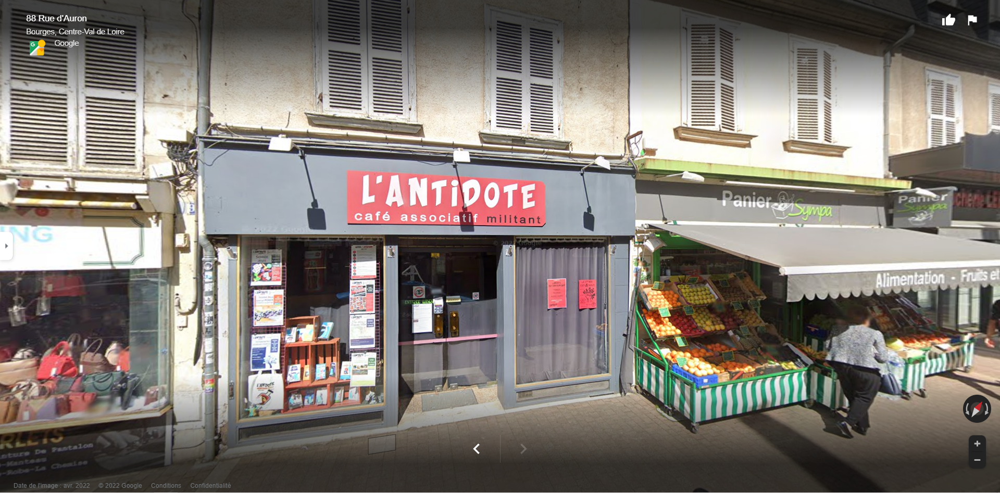
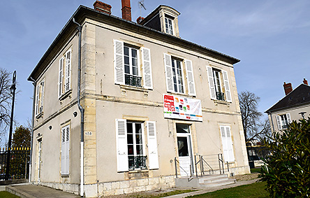
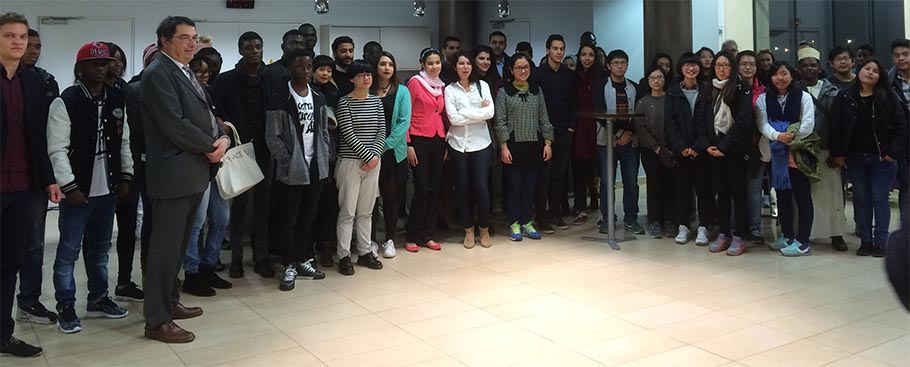

Au 88, rue d’Auron, à Bourges, l’association Ki6col, et son café associatif l’Antidote, met en place une entraide administrative. Rédiger un courrier aux services publics, compléter un dossier de demandes de subventions, réaliser un CV… « Si vous avez besoin d’un coup de main, n’hésitez pas », peut-on lire sur l’affiche de l’entraide administrative.
« On essaye de recréer un lien entre la population et les services publics, lance Marie, bénévole en charge de l’entraide. La fermeture, petit à petit, des services publics est un facteur, mais c’est aussi le passage au numérique des services publics qui pose problème à la population. » Même si ces services essaient d’accompagner les changements, ce n’est pas toujours simple pour certains usagers.
Tous les mercredis, de 17 heures à 19 heures, le service est proposé gratuitement à la population. Même les rédactions de lettres d’amour, pour les plus sentimentaux, sont possibles… « Pourquoi pas, sourit Marie. Je n’ai jamais eu ce type de demandes. On est plus dans les demandes de CMU, mais ça serait bien aussi?! »
A l’INSA Centre Val de Loire, la vie associative est riche et dynamique. La vie sur le campus est rythmée tout au long de l’année par de nombreux événements culturels et sportifs. Une trentaine de clubs/associations se regroupe autour de 5 pôles associatifs : Culture – Sport – Solidarité – Technique – Gala. Notre INSA soutient activement les projets des étudiants : conférences, junior-entreprise, concours d’entreprises, projets culturels, concerts, After-work, rencontres sportives, gala de remise de diplômes, clubs technologiques, débats, etc.
Le Bureau des élèves (BDE) joue un rôle majeur dans l’organisation de la vie étudiante et associative de l’école. Il fédère les étudiants autour d’événements divers, il propose des services et représente les élèves et la vie associative auprès des instances locales, régionales et nationales. Retrouvez toutes les actualités des associations INSA Centre Val de Loire sur le site Campus des étudiants en cliquant ici.
La vie associative est organisée autour du BDE (Bureau Des Elèves) qui fédère les élèves et la vie
associative de l’INSA Centre Val de Loire. Concrètement, il organise tout type d'évènements, propose des
services et représente les élèves et la vie associative auprès des instances locales, régionales et
nationales.

Jeudi 3 novembre, le Conseil départemental du Cher organisait une Soirée d'Accueil des Étudiants
Internationaux dans la salle ICE du campus de Bourges. Tous les étudiants étrangers, primo-arrivants
présents à l'Institut étaient conviés.
Cette soirée aura permis de faciliter l’intégration de ces étudiants étrangers, de créer des relations
d'échange et de les informer sur les activités possibles à Bourges.
Trois étudiants de l'INSA Centre Val de Loire ont présenté leurs témoignages sur leur expérience en France :
- M. Kouadio KOFFI, étudiant de 5e année, provenant de l'ENSA Agadir qui est aussi nommé Président de
l'association ESF
- M. Minh HUY VAN, étudiant de 4e année de l'Université Hue au Vietnam
- M. Adel CHOUKRI, étudiant de 5e année en double diplôme de l'ENSA Agadir
